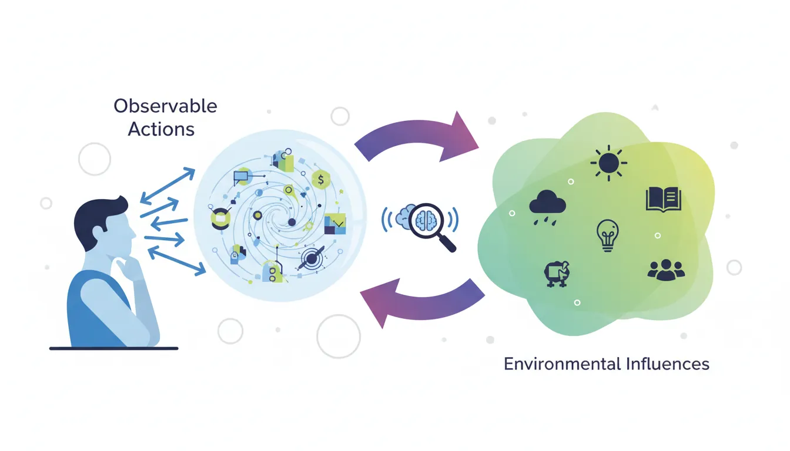
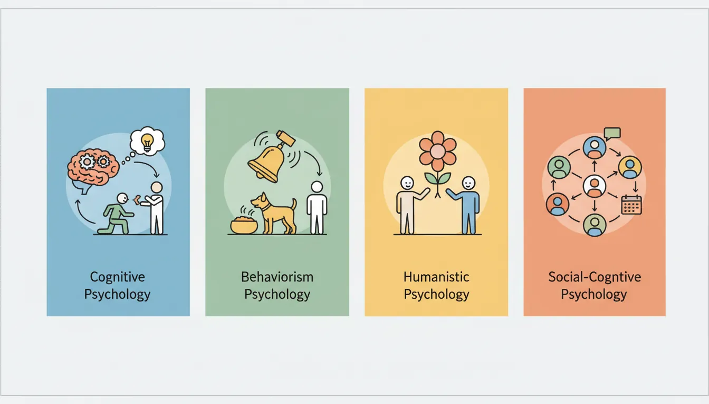
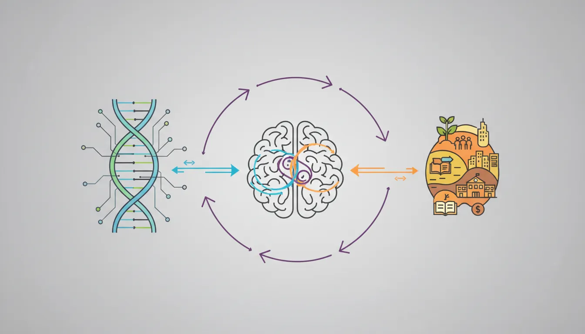
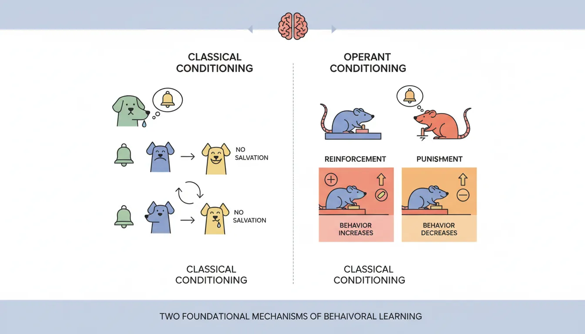
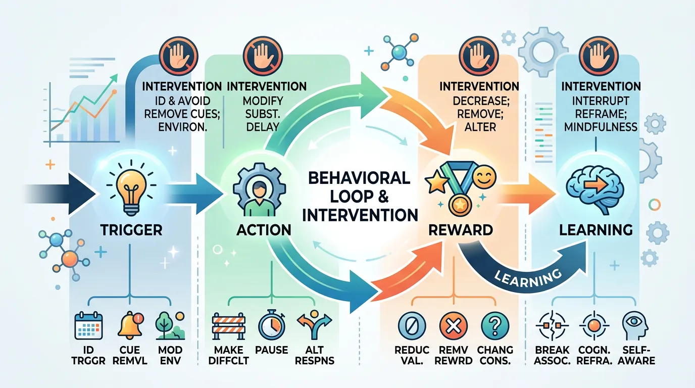

What is Behavioral Psychology?
Behavioral psychology studies observable actions and the environmental factors that influence them. In this first part of our comprehensive 11-part series, we'll explore the fundamental concepts that underpin all behavioral science.

Key Insight
Behavior is fundamentally the interaction between a person and their environment—understanding this relationship is the key to changing behavior.
Behavioral Psychology Mastery
Foundations of Behavior
Core principles, conditioning, behavioral loopHabit Formation & Breaking
Habit loops, building & breaking habitsDecision-Making Psychology
Biases, dual-system thinking, behavioral economicsMotivation & Drive
Intrinsic vs extrinsic, theories, goal psychologyNudge Theory & Choice Architecture
Defaults, framing, behavioral designBehavior Change Models
COM-B, Fogg, transtheoretical modelSocial Influence & Persuasion
Conformity, authority, Cialdini's principlesPractical Applications
Personal, workplace, business, healthBehavioral Neuroscience Basics
Dopamine, stress, habit circuitryBehavioral Research Methods
Experiments, RCTs, field studiesApplied Behavioral Therapy
CBT, exposure therapy, reinforcementPsychology of Observable Actions
Unlike other branches of psychology that focus on thoughts, feelings, or unconscious processes, behavioral psychology focuses exclusively on what can be directly observed and measured: actions.
Think of it like a scientist studying a river. They can't see the underground sources feeding it, but they can measure the water's flow, speed, and direction. Similarly, behavioral psychologists measure what people do, not what they claim to think or feel.
What Counts as "Behavior"?
| Observable Behavior | Not Observable (But Related) |
|---|---|
| Walking to the gym | Motivation to exercise |
| Eating a salad | Desire to be healthy |
| Checking phone 50 times/day | Fear of missing out |
| Yelling at a colleague | Feeling frustrated |
| Donating to charity | Compassion or guilt |
Why People Do What They Do
Every behavior serves a function—it accomplishes something for the person performing it. Understanding this function is the key to understanding and changing behavior.
The Four Functions of Behavior
- Escape/Avoidance: Behavior removes or prevents something unpleasant (leaving a boring meeting, avoiding difficult conversations)
- Attention: Behavior gets social recognition (posting on social media, complaining loudly)
- Access to Tangibles: Behavior obtains desired items or activities (working for money, asking for help)
- Sensory Stimulation: Behavior provides internal pleasure (listening to music, fidgeting)
Real-world example: A child throws tantrums in the grocery store. What function does this serve?
- If the parent gives in and buys candy → Access to tangibles
- If the parent pays attention and soothes → Attention
- If the parent leaves the store → Escape from overstimulating environment
The function determines the intervention. Understanding why behavior happens is half the solution.
Behavior = Person + Environment
Kurt Lewin, the founder of social psychology, proposed a simple but powerful formula:
Lewin's Behavior Equation
B = f(P, E)
Behavior is a function of the Person and their Environment
This means behavior is never caused by personality alone or situation alone—it's always the interaction between the two.
The Power of Situation
Philip Zimbardo assigned normal college students to be "guards" or "prisoners" in a mock prison. Within days, guards became cruel and prisoners became submissive—not because of their personalities, but because the environment shaped their behavior. The study was stopped after 6 days.
Lesson: Change the environment, and you change the behavior—even of "good" people.
Core Behavioral Schools
Understanding behavior requires knowing the major schools of thought that have shaped our understanding. Each offers unique insights and tools.

Behaviorism (Skinner, Watson)
Core idea: Behavior is entirely shaped by environmental stimuli and reinforcement. Mental states are irrelevant or unknowable.
Key Figures
John B. Watson (1878-1958) - "Father of Behaviorism"
- Famous claim: "Give me a dozen healthy infants... and I'll guarantee to take any one at random and train him to become any type of specialist I might select"
- Conducted the controversial "Little Albert" experiment demonstrating conditioned fear
B.F. Skinner (1904-1990) - Most influential behaviorist
- Developed operant conditioning and the "Skinner Box"
- Wrote "Walden Two" envisioning a society based on behavioral principles
- His daughter was NOT raised in a Skinner Box (that's a myth!)
Strengths: Highly scientific, measurable, and practical. Forms the basis of most behavior change interventions.
Limitations: Ignores cognitive processes, oversimplifies complex human behavior.
Cognitive Psychology
Core idea: Thoughts, beliefs, and mental representations influence behavior. What happens "inside the head" matters.
The Cognitive Revolution
In the 1950s-60s, psychologists rebelled against strict behaviorism. They argued that to understand behavior, we must study the mental processes between stimulus and response: attention, memory, problem-solving, and decision-making.
Key insight: The same event can produce different behaviors depending on how it's interpreted. Getting rejected by a date might motivate one person to improve themselves and cause another to give up—the difference is cognitive.
Social Psychology
Core idea: Behavior is profoundly influenced by the presence, actions, and expectations of others—even when they're not physically present.
Social Influence Examples
- Conformity: You tip more when you see others tip generously
- Social facilitation: You run faster when others are watching
- Diffusion of responsibility: You're less likely to help in emergencies when others are present
- Social norms: You recycle more when neighbors do
Evolutionary Psychology
Core idea: Many behaviors evolved because they helped our ancestors survive and reproduce. Understanding our evolutionary past helps explain present behavior.
Evolved Behavioral Tendencies
| Modern Behavior | Evolutionary Explanation |
|---|---|
| Craving high-calorie foods | Calories were scarce; storing fat = survival |
| Fear of snakes and spiders | Ancestral threats; quick detection = survival |
| Gossip and reputation monitoring | Tracking social alliances = group survival |
| Loss aversion (losses hurt more than gains) | Avoiding loss was more critical than seeking gain |
Nature vs Nurture in Behavior
The classic debate: Are we products of our genes (nature) or our environment (nurture)? Modern science reveals it's always both—but in complex ways.

Genetics vs Learning
Twin Studies: The Gold Standard
By comparing identical twins (100% shared genes) raised apart versus together, researchers can estimate genetic vs. environmental contributions to behavior.
Key findings: Most behavioral traits show 30-60% heritability—meaning genes matter, but environment matters equally or more.
Heritability Estimates
| Trait | Heritability | Interpretation |
|---|---|---|
| Height | ~80% | Highly genetic, but nutrition matters |
| Intelligence (IQ) | ~50-80% | Genetic + education + environment |
| Extraversion | ~50% | Born tendencies + social learning |
| Political orientation | ~40% | Surprisingly heritable! |
| Specific habits | ~10-20% | Mostly learned |
Personality vs Conditioning
Some people are naturally more sensitive to rewards (high dopamine), more anxious (high cortisol reactivity), or more impulsive. These biological predispositions affect how easily behaviors are learned.
Analogy: Think of genetics as the soil and environment as the weather. The same seed (behavior potential) grows differently depending on both soil quality and weather patterns. You can't grow tropical plants in arctic soil, but you also can't grow anything in perfect soil without water.
Biological Constraints on Learning
Not all behaviors are equally learnable. Our biology creates prepared learning—we learn some things easily (fears of snakes) and others with difficulty (fears of flowers).
Garcia's Taste Aversion Study
John Garcia found that rats could easily learn to avoid foods that made them sick (one-trial learning, even with long delays), but couldn't learn to avoid foods associated with electric shock. The opposite was true for visual/auditory cues—easy to associate with shock, hard with nausea.
Implication: Our brains are pre-wired to make certain associations, reflecting evolutionary history.
Reinforcement & Conditioning
The two foundational mechanisms of behavioral learning: classical conditioning (learning through association) and operant conditioning (learning through consequences).

Classical Conditioning (Pavlov)
Key Concept
Classical conditioning creates associations between stimuli, explaining emotional triggers, phobias, and cravings.
Ivan Pavlov's dogs famously learned to salivate at the sound of a bell because the bell was repeatedly paired with food. The bell (neutral stimulus) became a conditioned stimulus triggering a conditioned response.
Classical Conditioning Components
| Term | Definition | Pavlov Example | Modern Example |
|---|---|---|---|
| US (Unconditioned Stimulus) | Naturally triggers response | Food | Spicy food |
| UR (Unconditioned Response) | Natural reaction to US | Salivation | Sweating |
| NS → CS (Neutral → Conditioned Stimulus) | Paired with US until it triggers response alone | Bell | Restaurant logo |
| CR (Conditioned Response) | Learned reaction to CS | Salivation to bell | Sweating at logo |
Real-World Classical Conditioning
- Phobias: A single traumatic experience (dog bite) creates lasting fear of all dogs
- Advertising: Brands pair products with attractive people, fun music, and positive emotions
- Cravings: The smell of coffee triggers alertness before you even drink it
- PTSD: Loud noises trigger panic in combat veterans
Operant Conditioning (Skinner)
Key Concept
Operant conditioning uses rewards and punishments to shape behavior through reinforcement schedules.
While classical conditioning is about associations, operant conditioning is about consequences. Behaviors followed by positive outcomes increase; behaviors followed by negative outcomes decrease.
The Four Quadrants of Operant Conditioning
| Add Something (+) | Remove Something (-) | |
|---|---|---|
| Increase Behavior | Positive Reinforcement Add reward (bonus for good work) |
Negative Reinforcement Remove discomfort (take aspirin → pain gone) |
| Decrease Behavior | Positive Punishment Add unpleasant (speeding ticket) |
Negative Punishment Remove privilege (grounded from phone) |
Reinforcement Schedules
The timing of reinforcement dramatically affects behavior. Continuous reinforcement (every time) creates fast learning but fast extinction. Intermittent reinforcement creates slower learning but persistent behavior.
Schedule Types
| Schedule | Definition | Example | Effect |
|---|---|---|---|
| Fixed Ratio | Reward after X responses | Piecework pay | High rate, pause after reward |
| Variable Ratio | Reward after unpredictable responses | Slot machines | Very high rate, resistant to extinction |
| Fixed Interval | Reward after X time | Weekly paycheck | Activity increases near deadline |
| Variable Interval | Reward after unpredictable time | Fishing | Steady rate |
Why Social Media Is Addictive
Social media uses variable ratio reinforcement—the most addictive schedule. You never know when you'll get likes, comments, or interesting content, so you keep checking. This is the same principle that makes gambling addictive.
The Behavioral Loop
The Universal Behavior Cycle
- Trigger (Cue) - The cue that initiates behavior
- Action (Behavior) - The behavior itself
- Reward (Consequence) - The outcome that reinforces
- Learning (Adaptation) - The adaptation for future
This loop is the engine of all behavior change. To modify any behavior, you must intervene at one or more points in the loop:

Intervention Points
| Loop Component | To Increase Behavior | To Decrease Behavior |
|---|---|---|
| Trigger | Make cues obvious, visible | Remove cues, hide triggers |
| Action | Make behavior easy, reduce friction | Add friction, make behavior difficult |
| Reward | Make reward immediate, satisfying | Remove reward, add negative consequence |
| Learning | Track progress, celebrate wins | Break the association, reframe meaning |
Example: Stopping late-night snacking
- Trigger: Don't keep snacks visible; put them in hard-to-reach places
- Action: If you must snack, require using a bowl (adds friction)
- Reward: Substitute with herbal tea that provides warmth and ritual
- Learning: Track nights without snacking; link to better sleep quality
Measurement of Behavior
What gets measured gets managed. Behavioral psychology relies on precise measurement to understand and change behavior.
Key Behavioral Metrics
| Metric | What It Measures | Example |
|---|---|---|
| Frequency | How often behavior occurs | Checked phone 47 times today |
| Duration | How long behavior lasts | Exercised for 35 minutes |
| Latency | Time from cue to behavior | Snoozed alarm for 20 minutes |
| Intensity | Strength of behavior | Anger level 7/10 |
| Topography | Form/appearance of behavior | Clenched fists, raised voice |
Practical Exercise: Behavior Tracking
Try This: ABC Log
For one day, track a behavior you want to change using this format:
- Antecedent: What happened right before?
- Behavior: What exactly did you do?
- Consequence: What happened right after?
After 5-10 observations, patterns emerge that reveal the function of the behavior.
Conclusion & Next Steps
You've now learned the foundational concepts of behavioral psychology:
- Behavior is observable action influenced by both person and environment
- All behavior serves a function (escape, attention, tangibles, or sensory)
- Classical conditioning creates associations; operant conditioning uses consequences
- The behavioral loop (trigger → action → reward → learning) drives all habits
- Measuring behavior precisely is essential for changing it
These principles form the foundation for everything that follows in this series—from habit formation to social influence to therapeutic interventions.